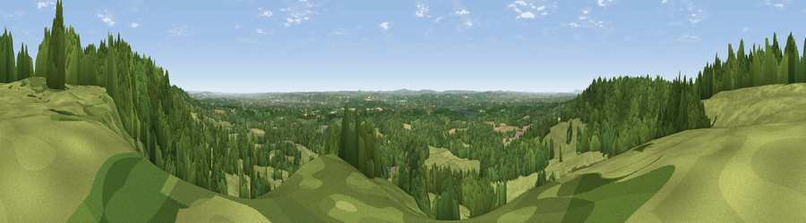

Viewpoint near Sevenoaks Weald
#10512 in England · top 4% of its area beats it · near Sevenoaks WealdThe view, rendered

A 360° render of this exact spot computed from the terrain model, tree cover and land cover — summer colours, afternoon light, calibrated against photographs of famous viewpoints. Real trees, hedges and buildings will differ in detail.
The panorama
Grey silhouette: terrain skyline in each direction (720 bearings, Earth curvature and refraction included). Dashed green: skyline with trees (+15 m) and buildings (+8 m) as obstacles. Blue strip: how far the ground is visible on each bearing.
Where the view opens
Wedge length = distance to the farthest visible ground on that bearing (vegetation-aware). Rings at 10, 25 and 50 km.
What fills the view
50% grassland · 43% woodland · 5% cropland ·
Angular shares of the visible panorama (visual magnitude), not map area. Landscape diversity 0.40 (0–1 Shannon).
Key numbers
More beautiful places nearby
The staircase of upgrades: each row has a higher view potential than everything closer. Driving times are estimates from straight-line distance, calibrated against real road routing — check an actual route before setting out.
| Place | Direction | Drive | Score |
|---|---|---|---|
| Viewpoint near Ide Hill | W · 1 km | ~3 min | 65.1 |
| Viewpoint near Ide Hill | W · 2 km | ~6 min | 67.9 |
| Viewpoint near Shipbourne | ENE · 6 km | ~13 min | 69.1 |
| Box Hill | W · 31 km | ~48 min | 70.4 |
| Viewpoint near Box Hill Village | W · 31 km | ~48 min | 71.0 |
| Viewpoint near Coldharbour | WSW · 37 km | ~56 min | 71.3 |
| Malling Hill | SSW · 41 km | ~61 min | 73.8 |
| Viewpoint near Plumpton | SSW · 42 km | ~61 min | 80.4 |
51.24511, 0.16524 · source: screening · position refined by local search. Computed location — check access rights before visiting.